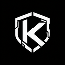

Verification and memory for coding-agent workflows. Install once, verify the changes that matter, remember what keeps breaking.
Every commit, automatically verified.
Reads the diff, picks the relevant browser flows, endpoint checks, and integration tests. Runs Kane headless. Never fakes failures.
Tracks recurring failures. Marks them resolved when a fix lands. Time-to-fix history and pattern detection across commits.
Agent-readable JSON for coding agents. Human-readable Markdown for you. Status bar integration in VS Code / Cursor / Windsurf.
What happens when you commit.
Claude Code, Cursor, Codex, Gemini, Antigravity — any MCP-speaking agent. Same engine, same reports.
Backs up before appending. Respects Husky. Marker-based idempotency.
Pre-commit blocks API keys, private keys, and lockfiles. `--no-verify` override.
koda_verify, koda_report, koda_memory, koda_setup_cicd — stdio-only.
Ambient status bar. One-click enable. No auto-hooks. VS Code + Open VSX.
Template-first GitHub Actions generation. Refuses overwrite without `--force`.
Environment check: Git, Kane, Groq, hooks, target URL, MCP config.
Install globally, init your project, commit.
npm install -g koda-verify cd your-project koda init koda doctor # MCP (Claude Code / Cursor) claude mcp add koda -- npx -y koda-verify mcp